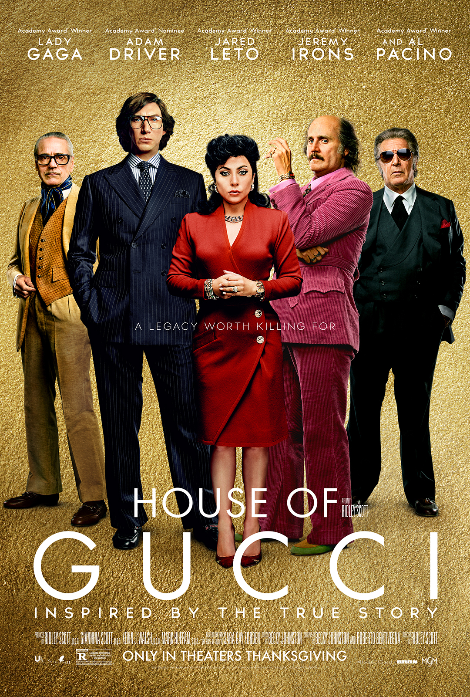

THE FOREIGN BIOGRAPHY MOVIES THAT I RECOMMEND TO YOU
The King(2019)
In the film The King, adapted from Shakespeare's play, Hal is a headstrong prince. He is also the heir to the throne of England. However, Dec has turned his back on the throne and his family and continues to live among ordinary people. When his father, a tyrannical king, dies, he is forced to take the throne as King Henry V.
Stars: Timothée Chalamet / Hal --- Joel Edgerton / Sir John Falstaff --- Robert Pattinson / The Dauphin --- Lily-Rose Depp / Princess Katherine of F...
IMDB Rating: 7.2/10
Bohemian Rhapsody(2018)
The film tells the story of the life of Freddie Mercury, the lead singer of the British rock band Queen, from the formation of the band in 1970 up to their 1985 Live Aid performance at the original Wembley Stadium. The film stars Rami Malek as Mercury, with Lucy Boynton, Gwilym Lee, Ben Hardy, Joe Mazzello, Aidan Gillen, Tom Hollander, and Mike Myers in supporting roles. Queen members Brian May and Roger Taylor also served as consultants on the film.
Stars: Rami Malek / Freddie Mercury --- Ben Hardy / Roger Taylor --- Joseph Mazzello / John Deacon --- Gwilym Lee / Brian May
IMDB Rating: 7.9/10
The Intouchables(2011)
Dear Friend, it tells the story of a paralyzed man and the teenager who babysits him. Philippe, a wealthy businessman and aristocrat, is paralyzed after an accident while paragliding and becomes unable to use his neck down. Driss, on the other hand, is an unemployed man who has just got out of prison.
Stars: Omar Sy / Driss --- François Cluzet / Philippe --- Audrey Fleurot / Magalie --- Anne Le Ny / Yvonne
IMDB Rating: 8.5/10

House Of Gucci(2021)
House of Gucci is the life of Maurizio Gucci, the grandson and heir of the brand's founder Guccio Gucci, and the murder of his ex-wife Patrizia Reggiani in 1995 by hired killer. The film stars Maurizio Gucci as Adam Driver, Patrizia Reggiani as Lady Gaga and Aldo Gucci as Al Pacino.
Stars: Jared Leto / Paolo Gucci --- Lady Gaga / Patrizia Reggiani --- Adam Driver / Maurizio Gucci --- Al Pacino / Aldo Gucci --- Salma Hayek / Giuseppina "Pina" Auriemma